Année de fondation
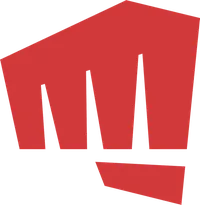
RIOT GAMESRAPPORT DD 2023 ENSAR · TRANSITION ÉCOLOGIQUE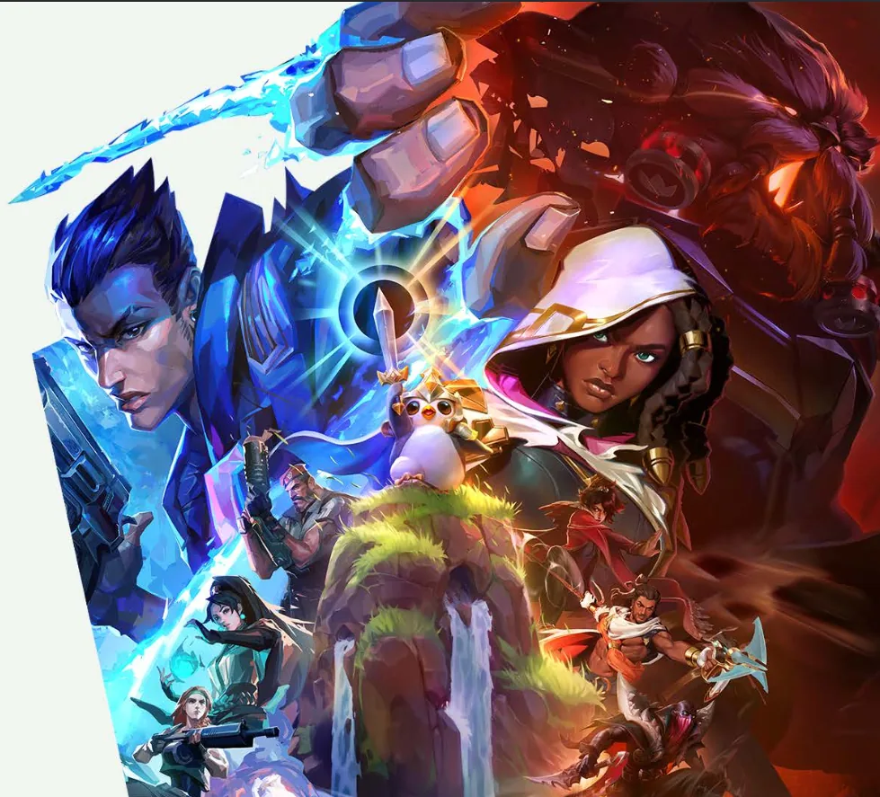
PRÉSENTATION DU RAPPORT
DÉVELOPPEMENT DURABLE
DE RIOT GAMES
EN 2023
- École
- ENSAR
- Matière
- Transition écologique
- Étudiants
- Ethan Siegler · Maël Bodin · Armand Zireg
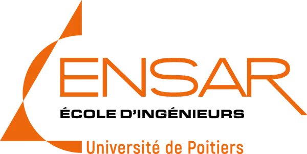
SOMMAIRE
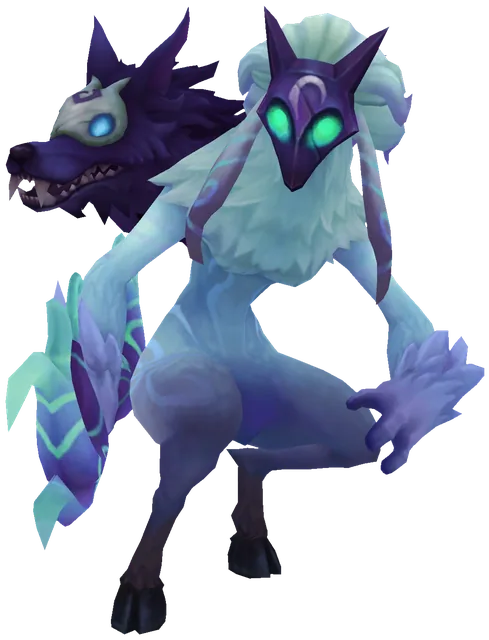
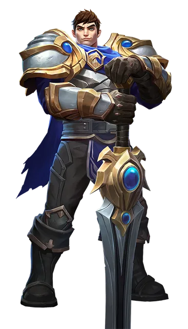
01RIOT GAMES,
RIOT GAMES,
C’EST QUOI ?
RIOT GAMES EN CHIFFRES
Chiffre d’affaires en 2023
Employés
Présent sur tous les continents
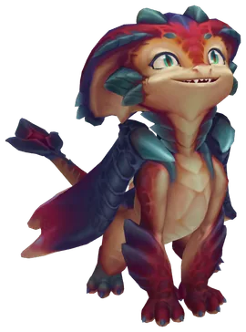
DES JEUX JOUÉS PAR DES MILLIONS
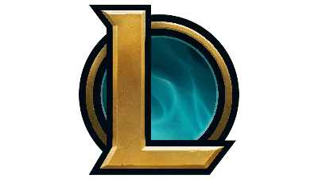
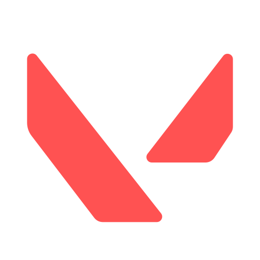
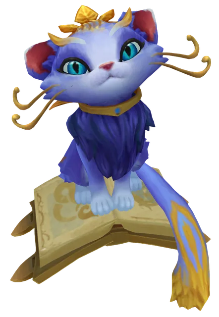
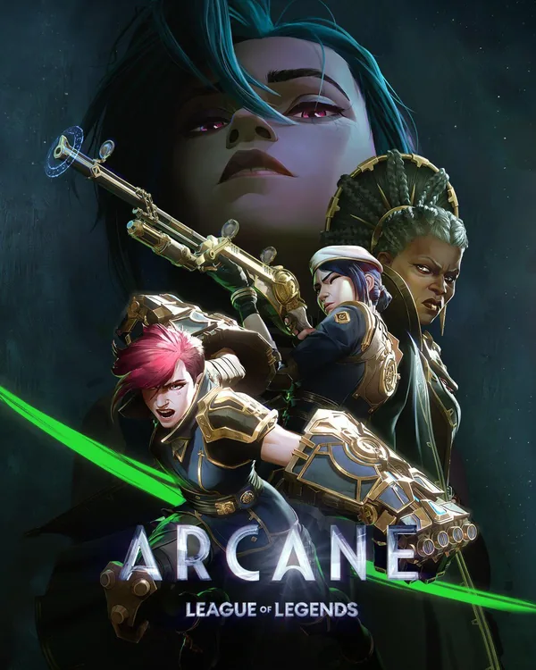
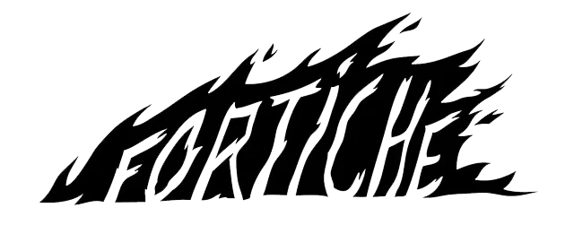
UN PHÉNOMÈNE
MONDIAL…
FRANÇAIS
Arcane, la série de Riot Games, est animée par le studio français Fortiche.
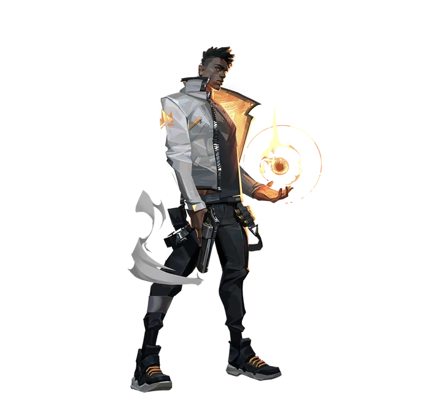
02LE RAPPORT DU DD
LE RAPPORT DU DD
DE RIOT EN 2023
QUI ?
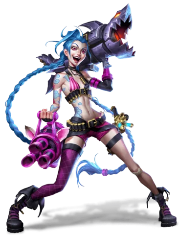
Les joueurs
Ceux qui jouent aux jeux de Riot, partout dans le monde.
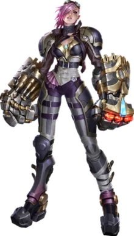
Les Rioters
Les employés, dans plus de 20 bureaux à travers le monde.
Les initiatives impliquent aussi les partenaires, les organisations caritatives et les communautés locales.
QUOI ?
Environnement
Durabilité environnementale
Social
Inclusion et soutien aux Rioters
Communautaire
Expérience des joueurs et impact sur la société
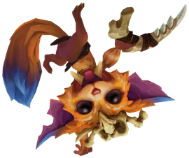
OÙ ?
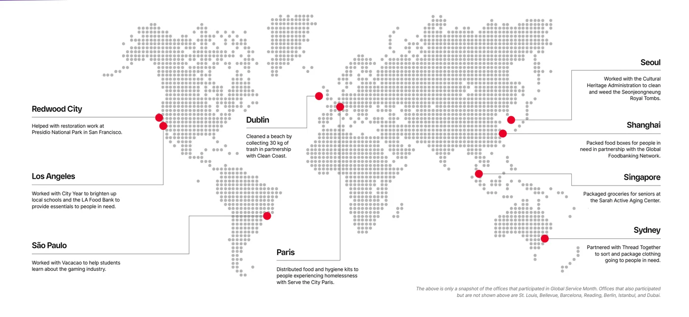
- Los Angeles
- Dublin
- Shanghai
- Mexico City
- Stockholm
- Mozambique · reforestation
COMMENT ?
Durabilité
Neutralité carbone en 2050, 100 % d’électricité renouvelable en 2030
Inclusion
Groupes d’inclusion, personnages issus de cultures diverses
Impact social
Social Impact Fund : 50 M$ depuis 2019
Soutien aux employés
Formation, équité salariale, congés sabbatiques
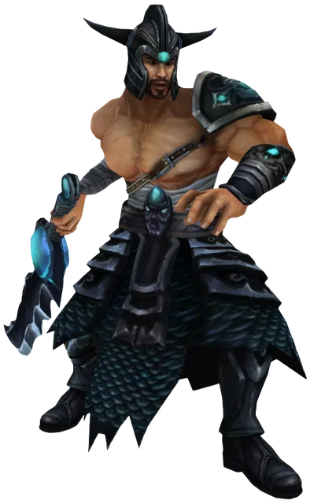
ENVIRONNEMENT
Projet Eden
1 $ versé toutes les 100 missions du Worlds Event Pass, jusqu’à 1 M$ pour reboiser Chimanimani, au Mozambique.
Water.org
Un don à chaque Ocean Drake tué pendant les Worlds 2023, avec AWS.
- 70Ocean Drakes
- 35 k$récoltés
- 70 000personnes avec un accès durable à l’eau
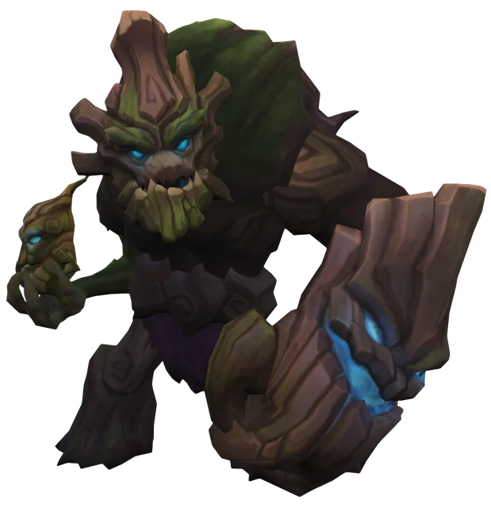
RIOTER INCLUSION GROUPS
Groupes
Des groupes de ressources pour les employés : Riot Unidos, Rainbow Rioters, Riot Women… Ils organisent événements et campagnes culturelles.
+ 5 nouveaux groupes en 2023
DiverseAbility
Une culture d’inclusion pour les Rioters en situation de handicap, et pour les aidants, parents et proches.
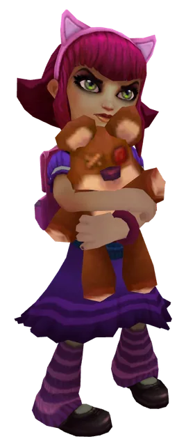
SOUTIEN AUX EMPLOYÉS
Apprentissage
Formation continue : interne, externe, autoguidée ou formelle.
Équité
Audits de l’équité salariale par un tiers expert, plusieurs fois par an.
Congés sabbatiques
8 semaines après 7 ans, + 2 semaines par année supplémentaire. 17,3 % des Rioters l’ont utilisé.
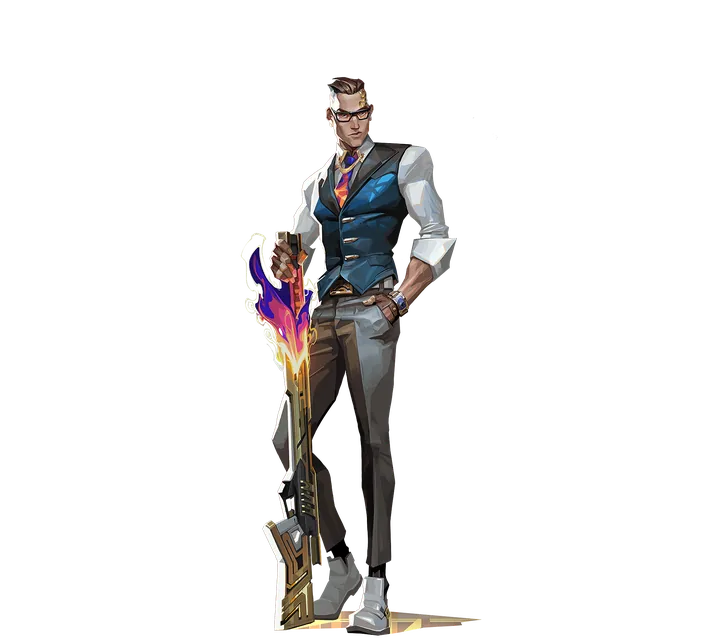
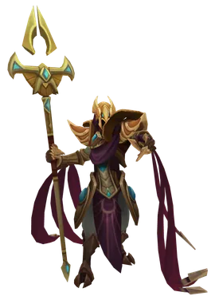
03COMMENTAIRE
COMMENTAIRE
DE CE RAPPORT
VISION DE RIOT
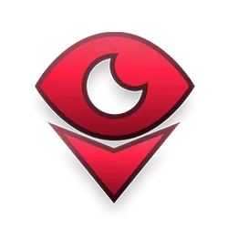
- Des actions concrètes sur les trois piliers du DD : environnement, économie, social.
- Des actions engagées dans le monde entier.
- Inclure un maximum de personnes, pas seulement les salariés.
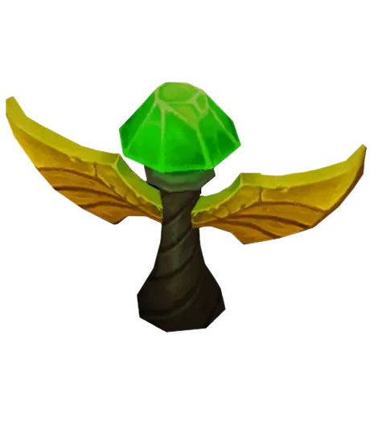
INCLUSION
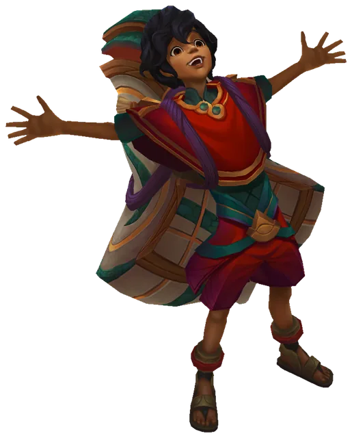
Des personnages inspirés des cultures latino-américaines et mexicano-américaines, et d’autres issus de la communauté LGBT+.
Chaque joueur peut s’identifier : une expérience inclusive pour tous.
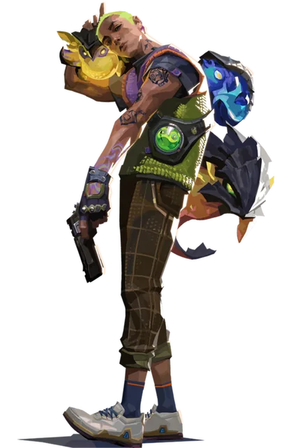
PROTECTION DES JOUEURS
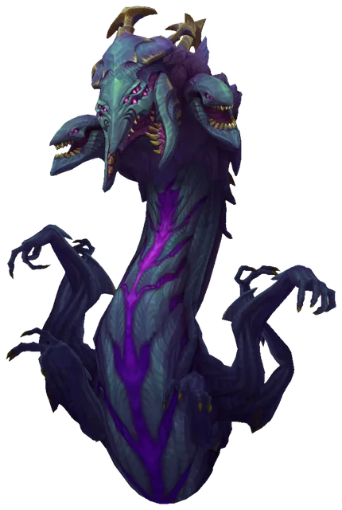
Nouveau : vocal intrusif
Une nouvelle mesure contre les abus en vocal.
+ de 500 000 sanctions
Prononcées en 2023.
Tout l’enjeu : l’équilibre entre modération et respect de la vie privée.
ENGAGEMENT ENVIRONNEMENTAL
Neutralité carbone
100 % d’électricité renouvelable
de CO₂ économisées
Réduction des déchets alimentaires
Reforestation au Mozambique
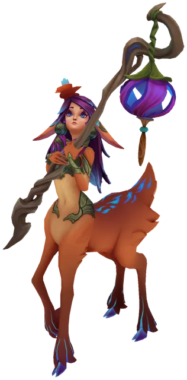
RESPONSABILITÉ ÉCO ET SOCIALE
- Soutien à des projets éducatifs, aux fondateurs marginalisés et aux économies locales.
- Riot Games Social Impact Fund : 50 M$ collectés depuis 2019, 4,5 M$ en 2023.
- Valeur ajoutée : des communautés inclusives et connectées.
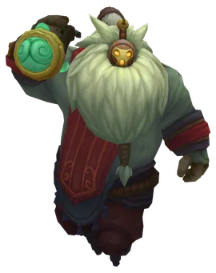
AMÉLIORATIONS POSSIBLES
- Introduire des KPI pour suivre les progrès.
- Présenter des études de cas détaillées sur l’impact des initiatives.
- Publier des bilans intermédiaires pour évaluer les résultats.
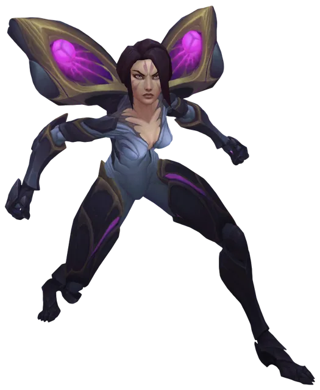
CONCLUSION
- Des initiatives ambitieuses en 2023.
- Des progrès en durabilité, en impact social et en inclusion.
- Une vision pour un avenir durable et inclusif dans le jeu vidéo.
Riot Games, un modèle d’équilibre entre innovation et responsabilité.
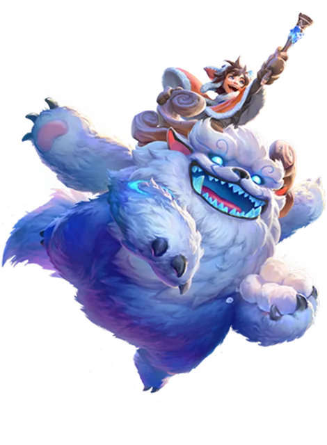
MERCI POUR
VOTRE ÉCOUTE
Avez-vous des questions ?